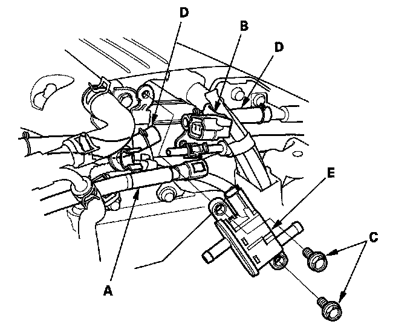

Canister Purge Control Valve: Service and Repair
EVAP Canister Purge Valve Replacement1. Remove the intake manifold cover.
2. Remove the air cleaner.
3. Relieve the fuel pressure.
4. Remove the fuel line (A).

5. Disconnect the EVAP canister purge valve 2P connector (B).
6. Remove the bolts (C) and the hoses (D), then remove the EVAP canister purge valve (E).
7. Install the parts in the reverse order of removal.